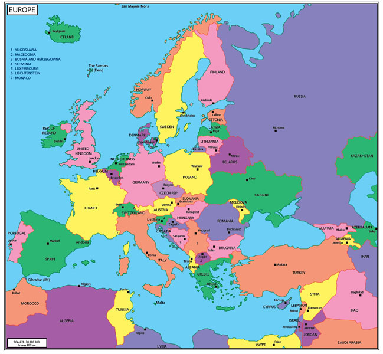

X:
Y:

You can get a ticket to Hamburg by discount
You can get a ticket to Kraków by discount
You can get a ticket to Madrid by discount
You can get a ticket to Turin by discount
You can get a ticket to Sofia by discount